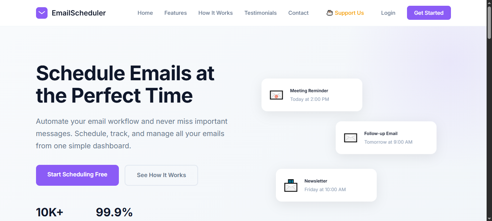

Email Scheduler
Overview
The Email Scheduler is a PHP-powered web application that allows users to compose and schedule emails to be delivered automatically at a future date and time. Instead of sending emails manually, users set it and forget it — the system handles the rest.
The Problem It Solves
Many businesses and individuals need to send emails at specific times — announcements, reminders, follow-ups — but don't want to be tied to their screen. This tool automates that entirely, saving time and ensuring messages are delivered precisely when needed.
Key Features
- Compose an email with a subject, recipient, and message body
- Set a future date and time for delivery
- Automated sending powered by a PHP cron job that runs in the background
- Confirmation email sent back to the user — notifying them whether delivery succeeded or failed
- All scheduled emails stored and tracked in a MySQL database
How I Built It
The frontend is a clean HTML/CSS form where users fill in the email details and schedule time. On submission, the data is saved to a MySQL database. A PHP cron job runs at regular intervals, checks for any emails due to be sent, and dispatches them using PHPMailer via SMTP. After each attempt, the system updates the database record and sends a confirmation back to the user.
What I Learned
This project taught me how to work with server-side automation using cron jobs, integrate SMTP email services with PHPMailer, and design backend systems that run independently without user interaction. It deepened my understanding of how real-world email platforms and SaaS tools work under the hood.